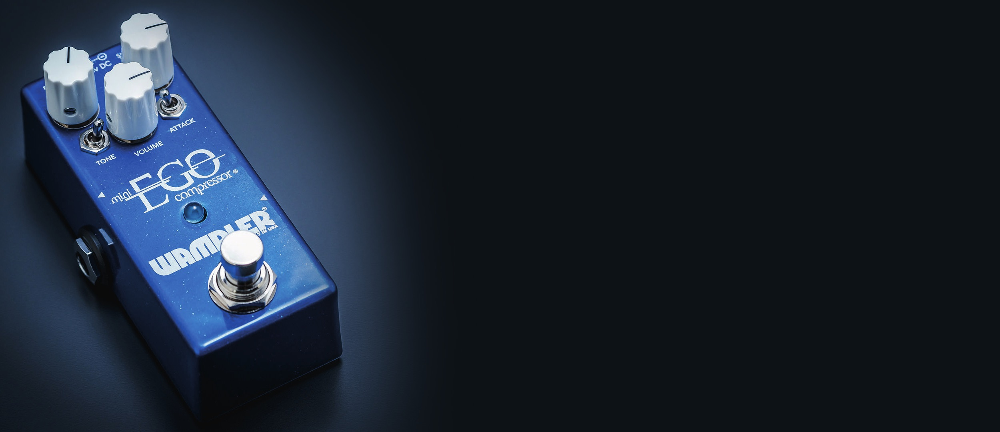
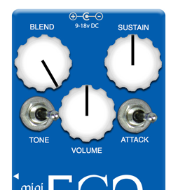
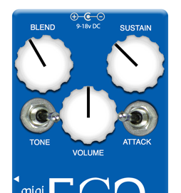
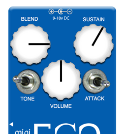
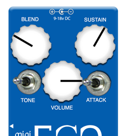

Welcome
The 2019 manual is the base document. The 2021 card adds the power specification and a new service address; both are marked where they appear.
Its condensed control summary is kept as its own Quick Start section at the end.
Compressors are often misunderstood. A compressor, in the most straightforward terms, makes loud sounds quieter and quiet sounds louder, "compressing" the signal's dynamic range. The loudest part of your instrument's note is the pluck, strum, or pick. That's referred to as the "transient" or the "attack" of the note, and it is usually quite percussive. The signal gets really loud for a fraction of a second before the note resonates and fades out. The actual character of the transient is a huge part of what defines the sound of a given instrument. Controlling its level is part of what compressors do, but there's more.
Compressors work to control the overall level of your playing, keeping peaks from getting too loud and raising the level of the note as it starts to fade out. Think of it like an automatic volume knob that turns down for loud signals and turns up for quiet signals. Raising the Sustain control makes it work harder to make lower volume sounds louder. Raising the Sustain is useful when playing clean. Careful, though, compressors don't know the difference between notes and noise, so the more you raise the Sustain, the more noise you can expect. A compressor usually works best early in the signal chain if you're concerned about noise!
Some compressors have a really noticeable "pop-in" effect, where they squash the transient and then quickly raise up to the level of the note. That's because they are reacting to what they see as a HUGE volume jump in the transient. An "Attack" control, which adjusts how quickly the compressor responds, offers some control. Slower attack will mean less pop-in, but it also won't do as much to control the loud transient. Faster attack is great for chicken-pickin'.
The most flexible compressors are compressors with "Blend" functionality. A blend compressor lets you mix clean signal with the compressed signal. That lets the loud transient through, preserving your playing dynamics, but seamlessly takes over to add sustain and fullness. You can adjust the balance of clean to compressed signal for your needs.
The Mini Ego Compressor gives you control over every aspect of an instrument compressor, including Sustain, Attack, Blend functionality, and even a special Tone switch Brian cooked up over time that can add some extra sparkle for tones that jangle with the best of 'em. It's a no-compromises compressor that offers the best of all worlds. What else would you expect from Brian Wampler?
To get the most out of your new pedal, you'll want to become very familiar with the controls. For the Compressor side of things, it features Volume, Sustain, and Attack controls to find your preferred compression behavior, as well as a special Tone control which lets you go from nothing added to lots of sparkle and chime on top of your signal. It also features the fantastic Blend knob, letting you easily adjust the degree of compressed to natural signal. If you've never tried a blend compressor before, you're in for a treat! As with all Wampler Pedals products, the Ego Compressor includes a high-quality true-bypass switch which takes it completely out of the signal path when bypassed. Experiment and enjoy!
Controls
Bypass Switch
A true-bypass switching footswitch that completely bypasses the signal when the pedal is off.
Volume
This control adjusts the output level of the Mini Ego Compressor. There's plenty of volume on tap, so whether you want to go farther than your input level or just make sure it can do unity volume (the same level of signal going out as you feed it, when active), you're covered. The Sustain and Blend controls will have an effect on the total output volume, so you're probably better off waiting to adjust the Volume until you've dialed in the other controls. Re-adjustment might be necessary if you get it to the desired level and still need to tweak the sound.
Sustain
Sustain controls how hard the Ego Compressor works to maintain the signal within its compression threshold. Higher sustain settings will let your notes go on for a very long time, but be careful, because higher sustain settings also raise the noise floor. If you are running your compressor after overdrive or distortion, you will want to pay close attention to the Sustain knob and maybe back off of it quite a bit so as not to raise the amount of noise to unbearable levels. The Ego Compressor is quiet, by compressor standards, but when the whole point of a pedal is to take a signal, even it out, and make the quiet parts louder and the loud parts quieter, you can expect added noise as part of the process.
Attack
Attack controls how quickly the compression action starts to take effect. At the slower attack settings, it will more gradually begin to compress the signal, which can leave your early note less affected. With the quicker attack setting, it gets a noticeable pop-in, because it clamps down on the high signal level of the initial note and then quickly raises the output level after that to begin its compression action. This is integral to the classic country chicken pickin' sound.
Tone
Quite a simple one this, to the left the control is darker and to the right it's brighter. There is no hard and fast rule with this, it all depends on your guitar and your amp.
Blend
Having established that the Ego Compressor has everything you need to dial in a fantastic sounding compressed signal, now it's time to learn about the Blend functionality. At about noon on the Blend knob, the compressed signal and the (enhanced, boosted, and slightly warmed) clean signal are even in level. Because the signals are in parallel inside the pedal before mixing down to mono at the output, the Blend control acts as a mixer knob. At 50/50, your clean signal's natural note attack is almost 100% unaffected by the Ego Compressor, but once the clean signal naturally fades, the Ego Compressor's compressed signal seamlessly fills in the gaps. This is a process no ear will hear because it's perfectly even and smooth, and the end result is all the benefits of a great compressor but a real, authentic transient. Counterclockwise, you get less and less Ego Compressor and more and more clean signal. Clockwise, more and more Ego Compressor and less and less clean signal. It's not too hard to grasp, but it is the sort of thing that rewards careful experimentation to see what all it can do before you settle in on what it is specifically that you want to do.
Suggested Settings




Power Requirements
This pedal was designed around the usage of a 9v or 18vDC power source and is intended to sound its best at 9V. To avoid damage to the pedal, do not exceed 18VDC, do not use center pin positive adapters and do not use AC power. Using an incorrect power adapter can lead to damage and will void the warranty on the pedal. This pedal draws approximately 5mA at 9vdc. The warranty begins at the point of purchase.
Added by the 2021 quick start card; the 2019 manual carries no power specification.
Quick Start
From the silky smooth sustain to full-on country chicken-pickin' territory, the Wampler Ego Compressor is the most versatile compressor pedal on the market…
Volume: Controls the total output level of the pedal.
Sustain: Controls the amount of sustain and compression. Note that the more clean signal used with the "blend" control, the less effect this will have.
Blend: Allows you to mix the clean signal with the compressed signal. 100% clean is all the way counterclockwise, 100% compressed is all the way clockwise.
Tone: Controls the amount of presence in the compressed signal only. This has no effect on the clean signal controlled by the "blend" control. With the switch set to the right, the effect is brighter.
Attack: Controls how quickly the compression action starts to take effect. Note that the more clean signal used with the "blend" control, the less effect this will have. When the switch is set to the left, the compression attack is much faster than when it's set to the right.
Power: See Power Requirements above.
Warranty / Support
WAMPLER Pedals Limited Warranty. WAMPLER offers a five (5) year warranty to the original purchaser that this WAMPLER product will be free from defects in material and workmanship. A dated sales receipt will establish coverage under this warranty. This warranty does not cover service or parts to repair damage caused by accident, neglect, normal cosmetic wear, disaster, misuse, abuse, negligence, inadequate packing or shipping procedures and service, repair or modifications to the product, which have not been authorized by WAMPLER. If this product is defective in materials or workmanship as warranted above, your sole remedy shall be repair or replacement as provided below.
RETURN PROCEDURES. In the unlikely event that a defect should occur, follow the procedure outlined below. Defective products must be shipped, together with a dated sales receipt, freight pre-paid and insured directly to WAMPLER SERVICE DEPT – 5300 Harbor Street, Commerce, CA 90040. A Return Authorization Number must be obtained from our Customer Service Department prior to shipping the product. Products must be shipped in their original packaging or its equivalent; in any case, the risk of loss or damage in transit is to be borne by the purchaser. The Returns Authorization Number must appear in large print directly below the shipping address. Always include a brief description of the defect, along with your correct return address and telephone number.
Service address updated by the 2021 quick start card. The 2019 manual still prints 3383 Gage Ave., Huntington Park, CA 90255, USA.
When emailing to inquire about a returned product, always refer to the Return Authorization Number. If WAMPLER determines that the unit was defective in materials or workmanship at any time during the warranty period, WAMPLER has the option of repairing or replacing the product at no additional charge, except as set forth below. All replaced parts become the property of WAMPLER. Products replaced or repaired under this warranty will be returned via ground shipping within the United States freight prepaid. WAMPLER is not responsible for costs associated with expedited shipping, either to WAMPLER or the return of the product to the customer.
INCIDENTAL OR CONSEQUENTIAL DAMAGE. In no event is WAMPLER liable for any incidental or consequential damages arising out of the use or inability to use any WAMPLER product, even if WAMPLER or a WAMPLER dealer has been advised of the possibility of such damages, or any other claim by any other party. Some states do not allow the exclusion or limitation of consequential damages, so the above limitation and exclusion may not apply to you. This warranty gives you specific legal rights and you may also have other rights which may vary from state to state.
FOR YOUR PROTECTION. Please complete the online warranty registration within (10) ten days of the date of purchase so that we may contact you directly in the event of a safety notification issued in accordance with the 1972 Consumer Product Safety Act.
This equipment has been tested and found to comply with the limits for a Class B digital device, pursuant to part 15 of the FCC Rules. These limits are designed to provide reasonable protection against harmful interference in a residential installation. This equipment generates, uses and can radiate radio frequency energy and, if not installed and used in accordance with the instructions, may cause harmful interference to radio communications. However, there are no guarantees that interference will not occur in a particular installation. If this equipment does cause harmful interference to radio or television reception, which can be determined by turning the equipment off and on, the user is encouraged to try to correct the interference by one or more of the following measures.
- Reorient or relocate the receiving antenna.
- Increase the separation between the equipment and the receiver.
- Connect the equipment into an outlet on a circuit different from that to which the receiver is connected.
- Consult the dealer or an experienced radio/TV technician for help.
Changes or modifications not expressly approved by the party responsible for compliance could void the user's warranty to operate the equipment.
CUSTOMER SUPPORT. Our dedicated staff is ready to help you with any warranty or product questions – please email us at help@wamplerpedals.com or call us on (765) 352-8626.
Please remember to register your pedal as soon as possible after purchase at the following web page to ensure quicker service if you should ever need to make a warranty claim: www.RegisterYourWampler.com